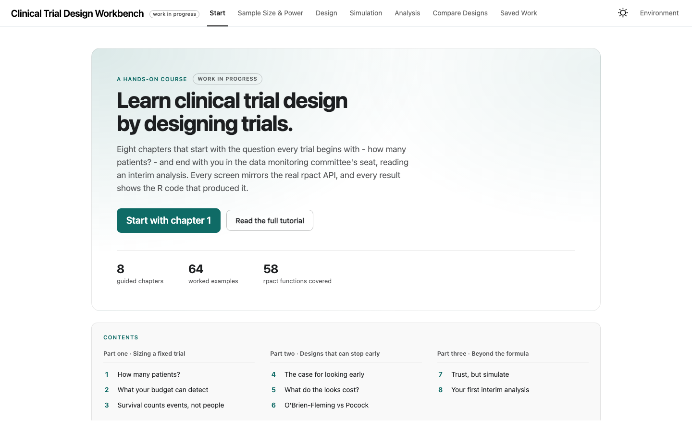
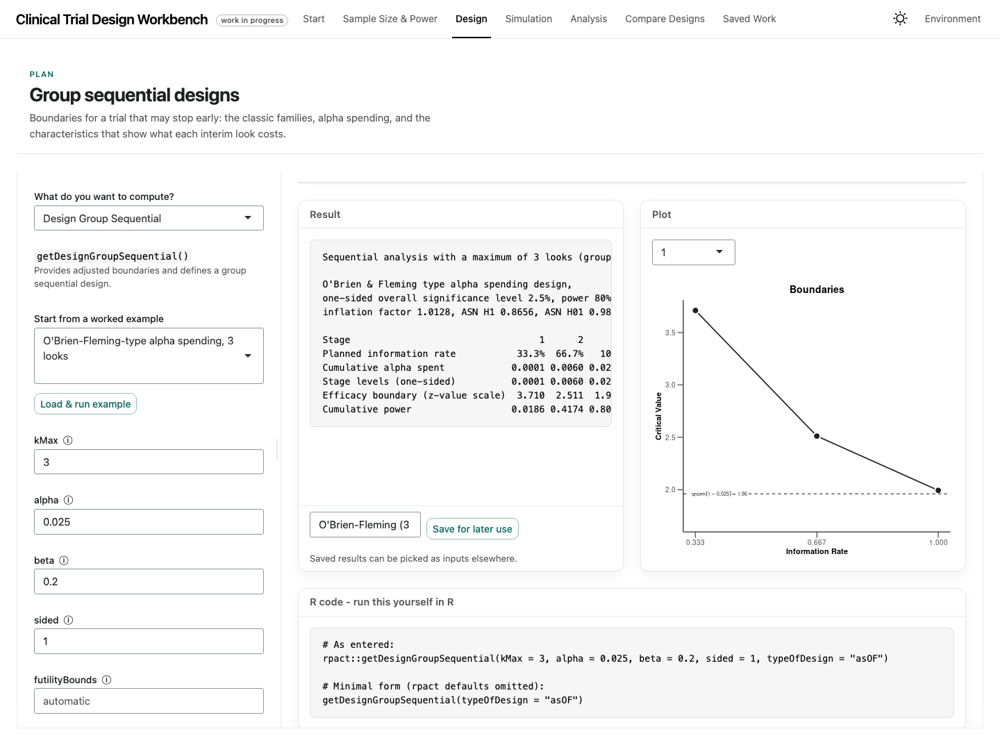

Clinical Trial Design Workbench
A free, open practice environment for group sequential and adaptive trial design. Every screen mirrors the real rpact API, and every result shows the R code that produced it.
A work in progress
There is a tutorial to follow along, a shorter quick-start guide, and the source on GitHub.
The workbench is a place to learn trial design by doing it. It is built for statisticians who are new to the field, and it teaches the way people actually learn: start with the question every trial begins with — how many patients? — then power, then the step up to designs with interim looks.
Nothing is hidden behind the interface. Every form mirrors the rpact R package’s own functions, and every result is shown with the exact R code that reproduces it, so what you learn in the app transfers directly to your own scripts.

What’s inside
Every rpact function family has an interface, organised the way the work is actually done. Each one opens the same way — the phase of work it belongs to, what it does, and a line on when you would reach for it — so moving between them costs nothing.
Design — group sequential boundaries: O’Brien–Fleming, Pocock, Haybittle–Peto, alpha-spending families, and the characteristics and plots that let you read what a boundary costs.
Sample size & power — means, rates, and survival endpoints; survival planning with accrual and follow-up; and the conversion calculators that turn medians into hazard rates and back.
Simulation — check a design’s operating characteristics by simulation before you trust them, including multi-arm and population-enrichment designs.
Analysis — enter interim data and monitor a running trial: stage results, test actions, conditional power, repeated confidence intervals, and the final inference once a boundary is crossed.
Compare — put two saved designs side by side and see where they differ.
Anything you compute can be saved, carried into the next calculation, exported as an HTML report, or written to a session file and restored later.

Learn by doing
The Start tab is laid out as a course rather than a menu: 8 guided chapters in three parts — sizing a fixed trial, designs that can stop early, and what to do when the formulas run out. Each chapter seeds the objects the next one needs, so none of them can dead-end, and the contents list at the top shows the whole arc before you start. Behind them sit 64 worked examples across 58 functions — every feature in the app has at least one example you can load with a click, run, and then bend: each one ends with a “try changing this” prompt and an interpretation of what the numbers mean.
The tutorial turns those examples into a follow-along course. Each exercise names what to load, what numbers to expect, and what to try next; the numbers quoted are verified against rpact 4.4.0. It closes with a capstone that designs, simulates, and analyses an anti-hypertensive trial end to end. If you only want your bearings, the shorter quick-start guide covers the layout and the first calculation.
What it is, and isn’t
The workbench is a teaching tool. It is free, open source (LGPL-3), and runs entirely on the rpact package — the validated, widely used R implementation of confirmatory adaptive trial methodology by Gernot Wassmer and Friedrich Pahlke. All of the statistical machinery is theirs; the workbench only sets a table for learning it. It is not a validated GxP system, and a design headed for a protocol should be reproduced in rpact itself — which is exactly what the R code under every result is for.
It is also very much a work in progress. Chapters and examples are still being added, rough edges remain, and anything here may change. If something is wrong, missing, or confusing, the issues page is open — that kind of feedback is exactly what shapes it next.
The workbench is a personal open-source project and is not affiliated with my employer or with the rpact team.